Genèse & Versioning
Passage d'un notebook de recherche à un service de production industrialisé. Focus sur la reproductibilité et la traçabilité complète du projet.
Objectifs MLOps
- Automatisation du cycle de vie.
- Tracking rigoureux des expérimentations.
- Versioning systématique du code et des modèles.
Qualité du Dépôt
Utilisation de messages de commit atomiques et explicites retraçant chaque étape de construction de la chaîne.
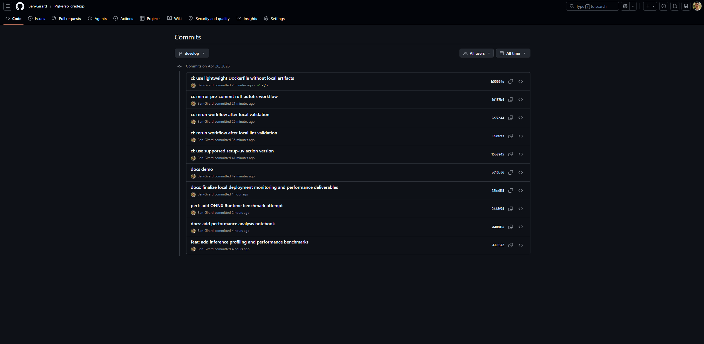
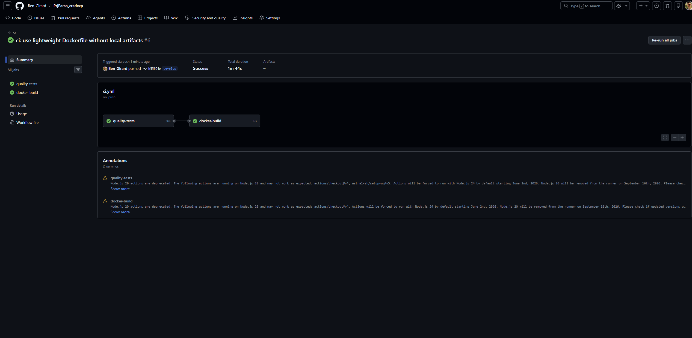
Fondations & Orchestration
Déploiement hybride et orchestration Docker pour une stack locale exhaustive et une accessibilité cloud immédiate.
Architecture Hybride
Local : Stack complète Docker (API, DB, UI, Monitoring) isolée.
Cloud : Hugging Face (Docker) + Supabase (Postgres Cloud).
Cycle de Vie Docker
Conteneurisation systématique via Docker Compose pour garantir l'isolement et la reproductibilité de l'environnement de démo.
Industrialisation du Modèle
Séparation claire entre la phase d'expérimentation (MLflow) et le moteur de serving autonome (Artéfacts figés).
Tracking & Registry
MLflow gère l'historique d'entraînement. La version v2.0 est actuellement validée pour le déploiement.
Artéfacts de Serving
Exportation en format joblib et schémas JSON pour garantir une image Docker autonome sans dépendance MLflow au runtime.
Moteur d'Inférence API
Service FastAPI haute performance avec validation stricte des schémas d'entrée et documentation interactive.
Robustesse & Validation
Utilisation de modèles Pydantic pour garantir l'intégrité des données client avant toute prédiction.
Optimisation Runtime
Chargement unique du modèle au démarrage de l'application (Stateless). Support des prédictions unitaires et batch.
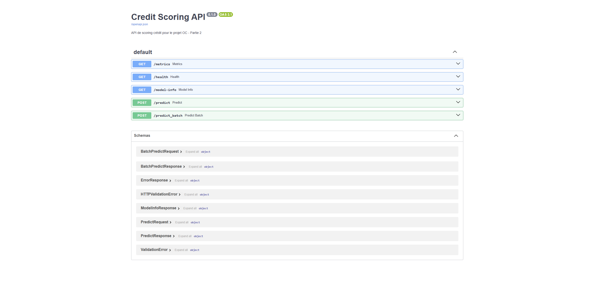
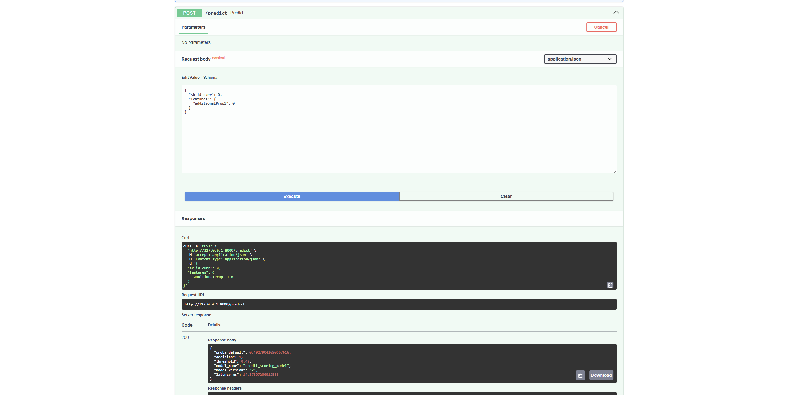
Persistance & Audit
Traçabilité totale : chaque appel à l'API est journalisé en base de données pour analyse ultérieure et audit.
Données Journalisées
- ID Client & Payloads complets.
- Score, décision et seuil utilisé.
- Latence système et version du modèle.
Conformité
Le stockage permet de reconstruire l'historique d'une décision de crédit et sert de source pour le monitoring du drift.
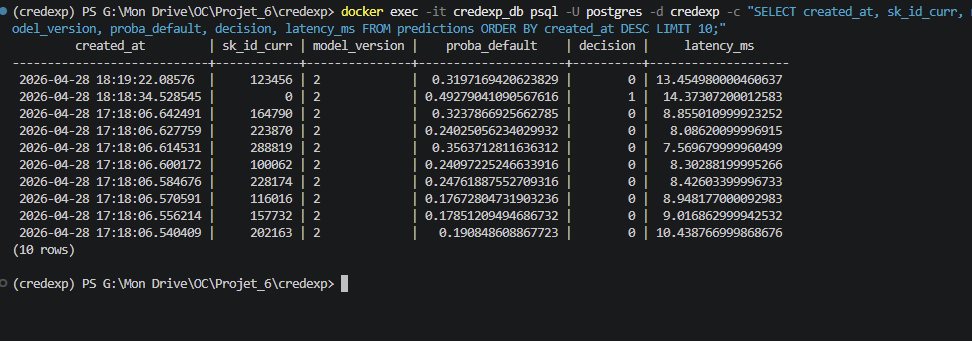
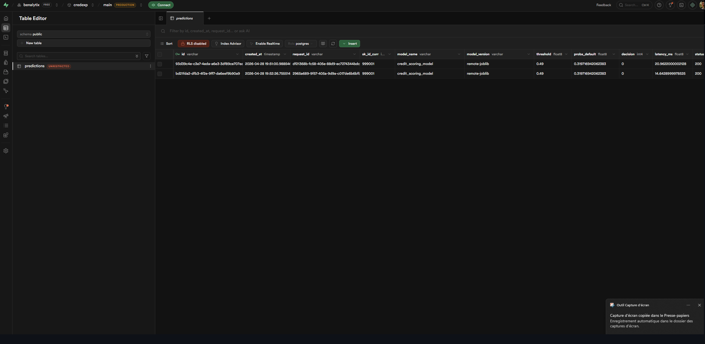
Interfaces Business
Démocratisation de l'accès au modèle via une application Streamlit intuitive pour les chargés de clientèle.
Client de Scoring
Interface de saisie simplifiée permettant d'obtenir un score instantané avec des éléments d'explicabilité.
Pilotage Métier
Visualisation des tendances de scoring et des distributions de décisions au niveau macro.
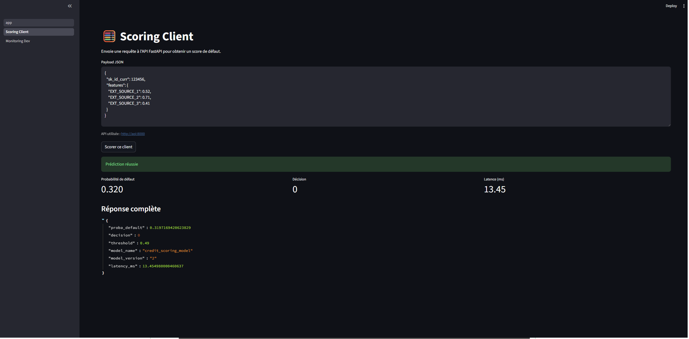
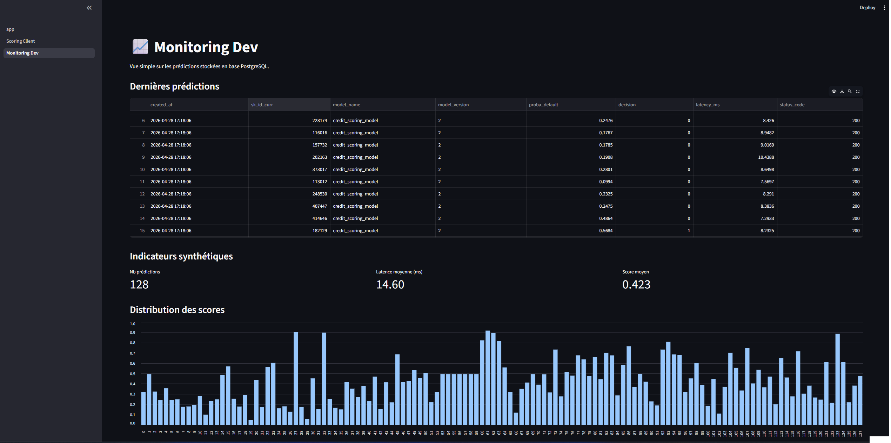
Monitoring Technique
Surveillance en temps réel de la santé des services et des performances infrastructurelles via Prometheus et Grafana.
Collecte de Métriques
Exportation automatique des indicateurs système (latence, taux d'erreur, volume de requêtes) depuis l'API.
Cockpit Ops
Dashboard Grafana permettant d'identifier immédiatement tout goulot d'étranglement ou anomalie technique.
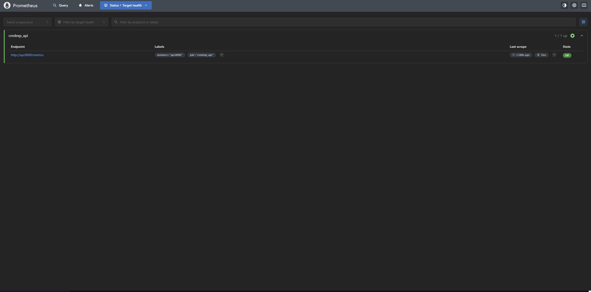
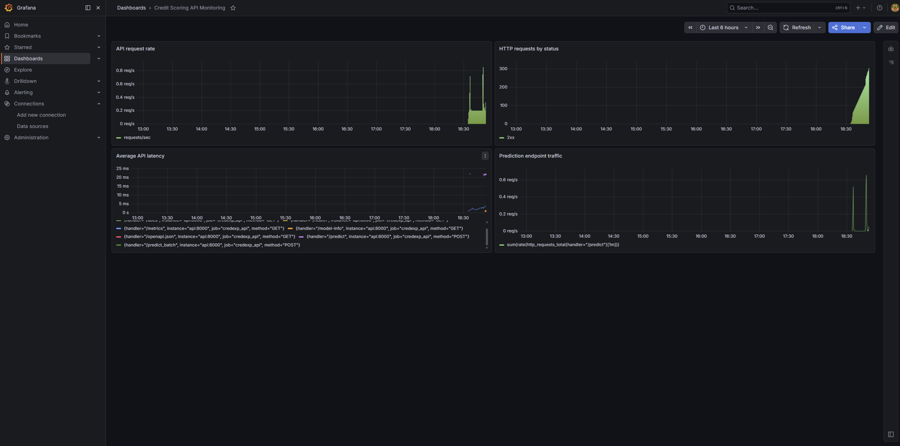
Analyse du Data Drift
Maintien de la fiabilité du modèle par la détection proactive de la dérive des données de production.
Méthodologie
Comparaison statistique via Evidently AI entre la fenêtre de production actuelle et la référence d'entraînement.
Indicateurs Clés
- Dérive des variables prédictives (Features).
- Dérive de la distribution des scores (Output).
- Qualité des données d'entrée.
Profiling & Benchmarks
Optimisation continue du temps de réponse pour garantir une expérience utilisateur fluide en quasi temps réel.
Identification des verrous
Utilisation de cProfile pour identifier les chemins critiques dans le prétraitement des données.
Stratégies Testées
- Optimisation du code Python.
- Benchmarking ONNX Runtime (Gain x2-x3).
- Impact du batching sur le débit.
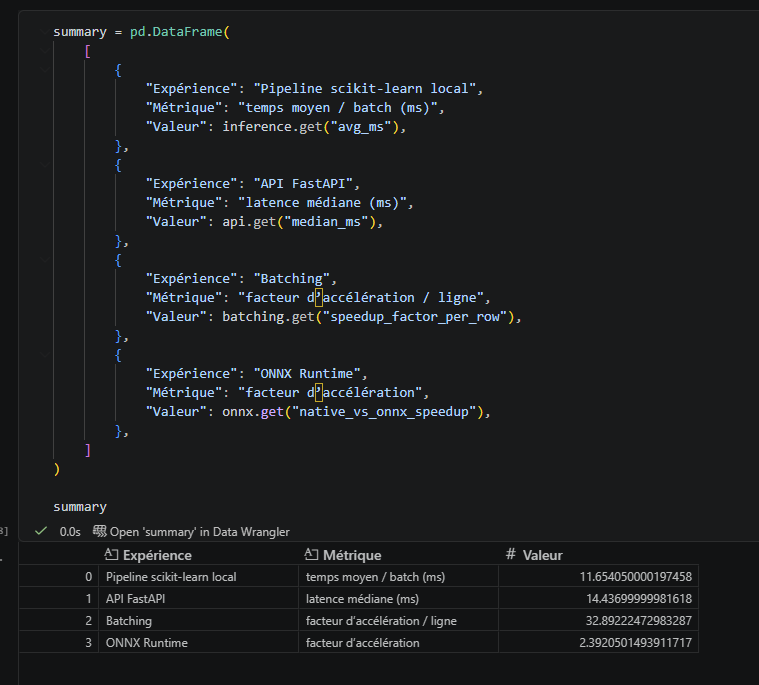
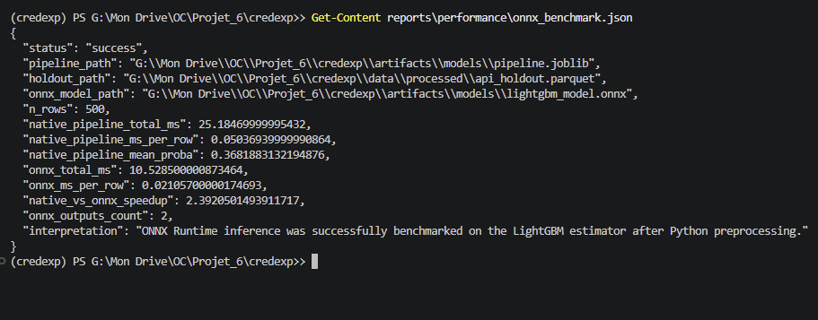
Gouvernance Automatisée
Sécurisation du cycle de livraison via des pipelines CI/CD robustes garantissant la qualité à chaque étape.
Qualité & Tests
- Linting strict avec Ruff.
- Tests unitaires & intégration avec Pytest.
- Couverture de code automatisée.
Déploiement Continu
Mise à jour automatique de l'espace Hugging Face lors de la validation des tests sur la branche principale.
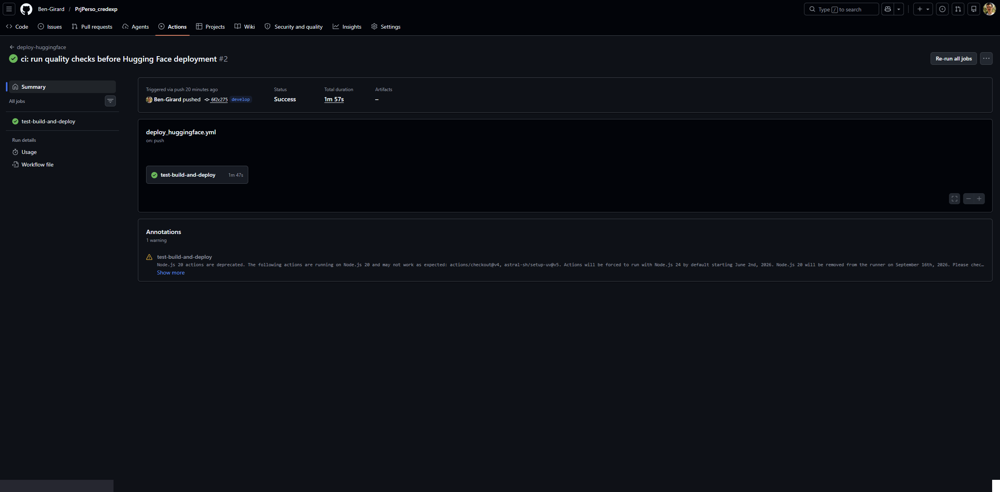
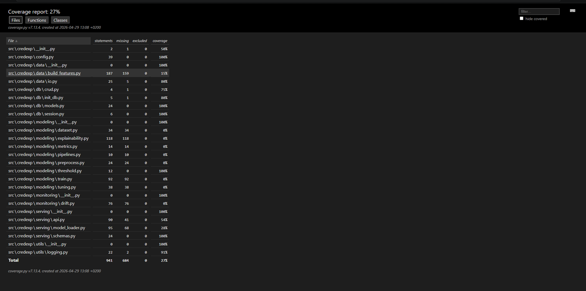